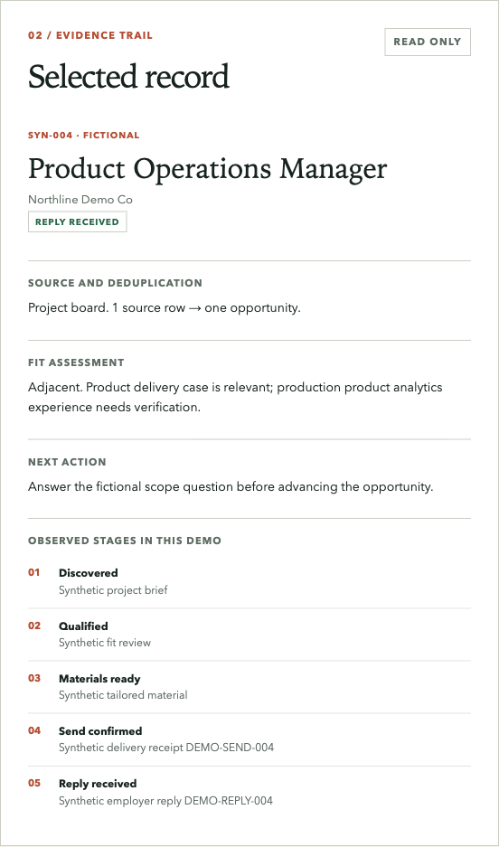

Context and problem
A job search generates many leads, overlapping channels and dates. The operational risk is losing the reason for a decision, duplicating an application or treating a sent message as an employer response.
Workflow
Discovery → qualification → duplicate check → role-specific materials → recorded application → follow-up date → response analysis. The working records include a CRM and exclusions. The public case does not expose company names, contacts, correspondence or personal resume data.
Evidence boundary: the system tracks confirmed states separately. A prepared letter is not a sent application; a sent application is not a reply; a reply is not an interview or paid work.
Architecture and decisions
The private workflow is an agent operating with a preserved local CRM, blacklist, status log and human review points. The public reviewer demo is separate: six fictional source rows and event records are loaded into in-memory SQLite, deduplicated by opportunity ID and exported as a static JSON snapshot. The browser reads that snapshot only; it cannot alter the private CRM or send a message.
Explore the synthetic ledger ↗ · Inspect demo SQL and source ↗

AI role and human control
Codex can discover opportunities, normalize information, draft material and maintain records. The owner supplies career facts and approves the operating boundaries. Codex wrote the public SQLite query, snapshot generator and interface; that does not establish independent SQL engineering by the owner. Claims in an application must be grounded in resume evidence.
Problems found and iterations
The first browser pass found that filtering could leave the detail panel focused on a record hidden from the list. The interface now selects a visible record when the filter changes. The fictional counts are generated from the SQLite snapshot so the displayed pipeline and underlying demo records stay aligned; they are never presented as real application outcomes.
Result and limits
The public ledger demonstrates deduplication, exclusion, evidence states and SQL-derived counts on fictional data. Its six raw leads become five unique records; two simulated sends and one simulated reply belong only to the demo. The private CRM remains the source of truth for the real search. No real response, placement or income metric is published here, and the demo is not an autonomous application platform.